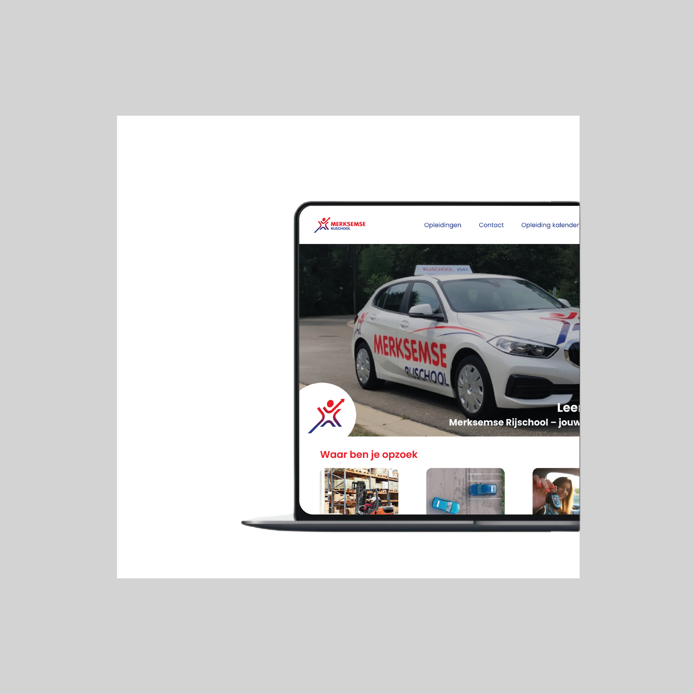
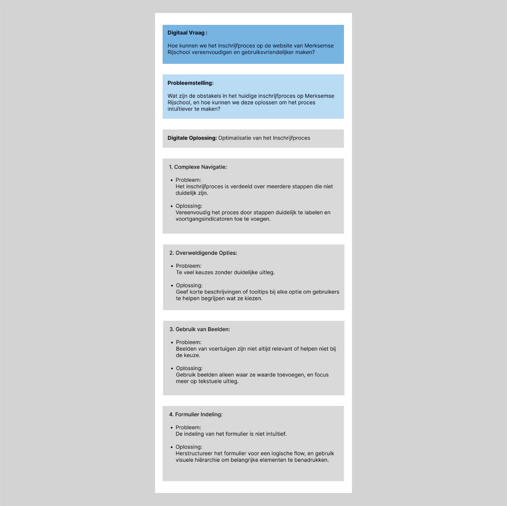

- Rol: UI/UX design (research, interactieontwerp, visueel ontwerp)
- Uitdaging: Complexe online inschrijfproces van Merksemse rijschool radicaal vereenvoudigen.
- Client: Academisch Project / zelf-geïnitieerde case study (gebaseerd op de website van Merksemse rijschool)
- Timeline: 120 uren over 2 weken
Scenario
De website van Merksemse Rijschool dient als een belangrijk digitaal contactpunt voor potentiële studenten die rijlessen willen volgen. Het online inschrijfproces is hierbij een cruciale functionaliteit voor het werven van nieuwe
leerlingen. Een soepel en duidelijk proces is essentieel om drempels voor inschrijving te verlagen en de efficiëntie voor zowel de student als de rijschool te verhogen.
Uitdaging
De uitdaging is om het bestaande online inschrijfproces op de website van Merksemse Rijschool te optimaliseren door de complexe navigatie, overweldigende opties, niet-relevante beelden en onintuïtieve formulierindeling aan te pakken,
met als doel het proces fundamenteel te vereenvoudigen en gebruiksvriendelijker te maken voor potentiële studenten.

Design proces
- Fase 1 - research & discovery:Definiëren digitale vraag en analyse bestaande website, opstellen empathy map & persona
- Fase 2 - explore & concept: Radicale herstructurering en ontwerp voor vereenvoudigd inschrijfproces.
- Fase 3 - design & prototyping: Ontwerpen en uitwerken van het functioneel prototype
Fase 1 - research & discovery
In Fase 1 richten we ons op het grondig onderzoeken van de bestaande situatie en het begrijpen van de gebruiker. We analyseren de huidige website en stellen de digitale vraag op om de kernproblemen te definiëren. Door middel van een
empathy map en persona krijgen we diepgaande inzichten in de behoeften en wensen van de doelgroep, wat een solide basis legt voor alle volgende ontwerpbeslissingen.
-
Digitaal vraag en huidge website
We beginnen door het stellen van de kernvraag en het grondig analyseren van de uitgangssituatie. Dit begon met het formuleren van de Digitale Vraag: "Hoe kunnen we het inschrijfproces op de website van Merksemse Rijschool
vereenvoudigen en gebruiksvriendelijker maken?" Als antwoord op deze vraag hebben we de bestaande website van de rijschool grondig geanalyseerd om het huidige inschrijfproces en de knelpunten in kaart te brengen.
Deze analyse bracht vier belangrijke uitdagingen aan het licht: een complexe navigatie met onduidelijke stappen, overweldigende opties zonder duidelijke uitleg, gebruik van beelden die niet altijd relevant zijn, en een
formulierindeling die niet intuïtief is. Door deze problemen in kaart te brengen, konden we gericht werken aan het formuleren van oplossingen die nodig waren om een eenvoudiger en veel gebruiksvriendelijker inschrijfproces te
realiseren.


Persona
Om een duidelijk beeld te krijgen van de mensen voor wie we de website maken, creëerden wij een persona. Dit is een bedacht persoon die lijkt op onze belangrijkste websitebezoeker. Wij noemden hem Youssef El Amrani, een 18-jarige
student die graag snel zijn rijbewijs wil halen en alles online regelt. Door te kijken naar wat Youssef belangrijk vindt (zoals snel inschrijven en duidelijke uitleg) en hoe hij de website zou gebruiken, kregen wij een gezicht bij
de gebruiker. Dit hielp ons om de website zo te ontwerpen dat hij perfect aansluit bij de wensen en doelen van jongeren zoals Youssef.
Empathy map
Om te begrijpen wat mensen denken en voelen als ze de website van de rijschool bezoeken en zich willen inschrijven, maakten wij een empathy map. Hiermee brachten we in kaart wat gebruikers denken (zoals "Waar moet ik beginnen met al
die info?"), wat ze voelen (soms een beetje gefrustreerd of onzeker door de oude site), wat ze doen (ze zoeken naar prijzen of hoe ze zich kunnen inschrijven), en wat ze zeggen ("Wanneer zijn er lessen?"). Door dit te doen,
ontdekten wij precies waar mensen moeite mee hadden en waar we de website beter moesten maken.
Fase 2 - explore & concept
In Fase 2 hebben we de visuele en structurele basis gelegd voor de compleet vernieuwde website. Het primaire doel was het radicaal vereenvoudigen van het online inschrijfproces, wat een grondige herziening van de lay-out,
contentpresentatie en de gebruikersstroom noodzakelijk maakte. Hoewel we de herkenbaarheid van Merksemse Rijschool hebben meegenomen door de originele basiskleuren en typografie te integreren, heeft deze focus op functionaliteit en een
intuïtieve gebruikerservaring geresulteerd in een website die fundamenteel anders en veel gebruiksvriendelijker aanvoelt. Dit was een cruciale stap om potentiële studenten moeiteloos door het inschrijfproces te leiden.
-
Homepage
Tijdens het ontwerpproces hebben we twee verschillende concepten uitgewerkt voor de homepage van de website, zoals rechts getoond. Het eerste concept (links) legde sterk de nadruk op specifieke, actuele informatie zoals de nieuwe
locatie voor logistieke opleidingen, direct zichtbaar in de hero-sectie. Na evaluatie van beide richtingen hebben we besloten om te gaan voor het tweede concept (rechts). Dit ontwerp, dat uiteindelijk is gekozen als basis voor de
realisatie, combineert een meer algemene en uitnodigende introductie bovenaan met de heldere structuur en essentiële informatieblokken die ook in het eerste concept aanwezig waren, wat resulteert in een gebalanceerde en
gebruiksvriendelijke startpagina.
Fase 3 - design & prototyping
In Fase 3 zetten we de inzichten uit ons onderzoek in een concreet visueel en interactief ontwerp. We werken de lay-outs en de interface van de website uit, met een sterke focus op het centrale online inschrijfproces. Vervolgens bouwen we
een functioneel prototype dat de nieuwe, vereenvoudigde stappen en navigatie tastbaar maakt. Hierdoor kunnen we de toekomstige gebruikerservaring door het inschrijfproces visualiseren, testen en verfijnen, om te garanderen dat het proces
intuïtief, helder en klaar is voor de volgende fase van ontwikkeling.
Dit project voor Merksemse Rijschool laat zien hoe we met een gerichte aanpak het complexe inschrijfproces hebben getransformeerd naar een intuïtieve en soepele gebruikerservaring. Door de focus te leggen op de gebruiker en het proces te
vereenvoudigen, hebben we een website gerealiseerd die bijdraagt aan een efficiëntere inschrijving en een positievere eerste indruk voor potentiële studenten.